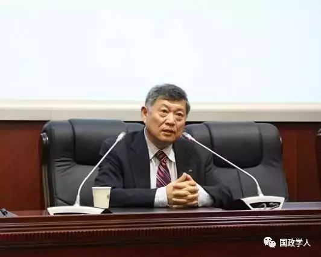

收录于合集


赵穗生
现任美国丹佛大学国际关系学院终身职正教授兼美中合作中心主任，亚太安全合作理事会美国委员会董事会董事，哈佛大学费正清中心研究员，美中关系全国委员会委员。担任北京大学、中国人民大学、北京国际关系学院、复旦大学、上海外国语大学兼职教授。
注
本文为丹佛大学赵穗生教授在7月31日CCG中国与全球化智库的讲演，由凤凰大学问在录音稿上首发整理，并获得赵穗生教授授权发布。
中国凭什么重塑世界秩序？
今天跟大家一起交流的题目，世界秩序的重塑——中美在全球治理当中的博弈。
谈到世界秩序，首先要定义什么叫世界秩序， 世界秩序实际上是在全球治理当中的一些游戏规则，加一些通常的价值概念和一些机制。这种全球秩序的塑造通常是由大国来承担的，小国常常是追随大国制定的秩序。
而崛起的大国常常不满意继承大国所塑造的一些秩序，而常常打破这些规则，重新塑造反映它的价值观念、利益的一些游戏规则。
目前的世界秩序是美国领导，在二战以后塑造的。现在的秩序面临着两个方面的挑战：
一个是中国作为崛起的大国， 很多人认为中国崛起以后，尤其是进入21世纪以后，对现存的国际秩序越来越不满意。因此，中国在挑战，甚至要替代美国，重新塑造国际秩序。
所有的大国崛起以后都要塑造有利于自己利益、反映自己价值观念的世界秩序，中国也不例外。
第二个挑战来自于美国本身。 虽然这个秩序是美国领导、塑造的，但特朗普上台以后做了很多事情，都在瓦解或者是挑战美国自己建立的秩序，包括他所谈的“美国第一”，他所要退出的跨太平洋合作伙伴TPP，他代表美国退出的全球气候协议，要重新谈判北美自由贸易区。
对于美国所主导的很多区域性和多边的，乃至于双边的一些安全或者经济协议的重新谈判，都反应了美国本身对他自己所建立的这套秩序的挑战。
这种挑战和中国的崛起加在一起，很多人就认为中国的挑战现在成功的机会更大。
我的回答是，又对又不对。
中国的的确确对现存的国际秩序有很多不满的地方，中国也的确在很大程度上挑战现存国际秩序，但是我的研究证明， 中国并没有替代，也不可能在短期内替代美国重新塑造二战以后的世界秩序。
尽管美国现在出现了很多问题，全世界现在也对美国很多不信任。这种情况下很多人认为中国做的很多事情，包括气候变化、区域合作、全球治理很多方面，现在起的作用比美国还正面、积极。
中国是不是会替代美国重新塑造国际秩序？中国正在尽自己的力量在国际治理当中发挥它的参与和贡献者的作用，但是中国没有办法取代美国。
要回答这个问题，我们首先要看一下二战以后的秩序本身是什么样的。 至少在西方，很多人谈二战以后的世界秩序，都说这个秩序是自由主义的秩序，它是一种全球化，跨越国界，或者侵蚀国界，这样一种国际秩序。
这种说法对，但也不完全对。 实际上二战以后，美国所主导建立起来的国际秩序是一个混合原则输出的国际秩序。 什么叫混合原则？一方面它有很强的自由主义，或者说全球化的成分。同时，它根本的指导原则还是很传统的，即1648年《威斯特伐利亚协议》所建立起来的所谓民族国家的主权原则为基础的国际秩序。
这种混合原则是最复杂的原则，这种混合原则反映在现存的国际机构当中最主要的就是《联合国宪章》所规定的国际机构。
一方面，主权国家平等，这是联合国宪章最主要的原则。 联合国有二百多个成员国，每个国家在联合国里面都有一票，而联合国大会上投票的结果没有强制力，不能强制一个主权国家去接受一个超主权机构所做出的决议，所以主权原则仍然是《联合国宪章》最主要的原则。
但同时，主权又受到相对限制。 比如说一个国家要发起战争，需要经过联合国安理会的通过，通过投票以后，一个国家才有权发动战争。而联合国安理会的五个常任理事国都是世界最强大的国家，他们来决定一个主权国家有没有发动战争的权力，所以主权国家的主权在这种程度上得到了一些修正。
这种主权在安全事务上的修正相比于在经济、贸易、投资、金融当中的修正还是小巫见大巫，在经济、贸易、投资、金融领域里，国家主权就得到更大的限制，这也反应在联合国的机构当中，这种机构我们叫做多边金融机构、多边贸易机构。
世界银行、国际货币基金组织、WTO，这样一些国际贸易金融投资发展机构，在很大程度上是完全跨国界的，主权国家在很大程度上把自己的主权一部分让渡给这样一些国际机构做出自由贸易、资金流动的决定。
所以， 多边机构的作用非常清楚，就是通过一些自由贸易、资金自由流动，不仅仅促进全球的经济发展，而且减少了发生战争的可能性。 因为一个国家可以通过跨国公司来攫取资源，为什么还要发动战争？
多边的《联合国宪章》基础之上建立起来的机构，构成了二战以后现存国际秩序最基本的制度或者机制。
中华人民共和国在建国之初是被排除在联合国之外的，换言之，中国并没有参与二战以后国际秩序的建立。中国在二战秩序建立之初是一个革命性的国家，也就是说中国要推翻这些体制。
冷战期间世界分为社会主义阵营和自由世界，中国属于社会主义阵营。而在社会主义阵营当中，中国又不是联合国的成员，所以中国要跟第三世界国家或者其他一些有共同理念的国家一起来重建国际秩序。
中国跟前苏联在一起的时候是革命国家，跟苏联分道扬镳以后，是一个更加激进的革命国家。
但中国没有一个与现存体系相背离的价值观念，中国用来挑战现存体系的价值观念实际上是现存价值体系当中的最根本的价值观念。
万隆会议提出和平共处五项原则，最基本点就是国家主权和领土完整，互不干涉内政，相互尊重各自的国家利益，这完全是当时国际秩序最主要的价值概念。所以中国既使挑战当时的国际秩序，但没有提出替代现存国际秩序的价值跟观念。
在这个过程中，中国就很容易在1971年加入联合国，融入现存的国际秩序。中国加入联合国以后开始了艰难的适应和融入，最后变成现存国际秩序的利益相关者、参与者和贡献者的角色。
中国参与现存国际秩序最初是从低级政治的领域开始，主要经济、金融、投资、贸易的领域。中国1980年加入世界银行，1981年加入国际货币基金组织，2001年加入WTO，当时叫做关贸组织。在这过程当中中国很快感觉到，中国能够从参与现存国际秩序，从国家经济、贸易机构当中得到非常大的优惠条件，中国很快成为一个很大的受益者。
但是中国对于高级政治，主要是涉及到国家安全、人权，这样一些比较敏感的问题，中国有相当一段时期的适应过程。 既使中国加入了世界银行，中国对这样一个组织仍然是非常谨慎，因为这些组织牵涉到对中国主权的侵蚀，中国是非常谨慎的。所以中国有相当的一段时间，一开始是反对，然后是弃权，然后是不反对，但是也不参与，到最后是积极参与。
现在中国已经成为国际安全领域，联合国维和、国际控制多领域里一个非常重要的参与者。中国给联合国的预算超过了英国、法国，现在是第三位，美国、日本、中国。在联合国维和部队当中，中国承担经费是10%，这是第二位，美国下边就是中国。 中国从一个革命的国家已经成为一个领导的国家，是对现存国际秩序有非常重要贡献的国家。 为什么会产生这种转变？中国国力的增加，能力的变化。弱的时候主权被威胁就很大，国力强大以后，就不用担心对主权的侵蚀。
这种国家的变化导致中国对于现存国际秩序的态度变化。中国现在已经是现存国际秩序的利益相关者，甚至是一个负责任的利益相关者。
但是，中国是不是对现存国际秩序只有百分之百的满足呢？中国是不是现存国际秩序一个完全守成的国家？我的回答，中国不是。因为中国常常说现存的国际秩序有很多不公正，不合理的地方。不满意主要表现在三个方面：
第一，现存国际秩序的指导原则制定。 因为中国当时没有在场，它反映的还是西方主流的自由主义、人权或者是对于主权侵蚀的这一套价值观念。而这样的价值观念的趋向越来越强，由于中国国家政治制度、历史文化和西方的一些现存国际秩序塑造过程起了主导作用的国家有很大不同，所以中国感到在现存国际秩序当中是一个被排斥者。
而且中国在很大程度上对很多种价值观念是不可能接受的，比如说一些以自由民主为基本原则来界定国家主权概念。而且，在很多国际发展、国际合作、国际贷款中，现在国际机构的一些指导原则也是以西方价值原则为基础的。比如说世界银行贷款，或者是国际货币基金贷款，要求被贷款的国家要按照一些自由主义、一些削弱政府在经济事务中的作用，而强调一些非政府因素，强调他们认为的自由主义为基础的原则。这样的指导原则中国认为有不公正不合理的地方。
第二个就是中国的代表权、发言权。 现存的国际秩序在建立之初，二战结束的时候，美国起很大作用，因为美国当时的国民生产总值在全世界的占50%。中国当时是占1%、2%，微不足道。但是经过大半个世纪以后，这个比例已经发生根本性的变化。 今天美国占全球的比例大概是20%左右，降低了一半，而中国今天是15%左右。中国从1%、2%到15%，美国由50%到20%，但这样一种经济力量变化并没有反应在现存国际秩序的机构和组织结构当中。 现存国际制度当中美国仍然占主导地位，美国的发言权仍然在很大程度上跟在二战结束之后几乎没有太大变化。
所以中国就要求变化，但这种要求在很大程度上受到美国的压制，美国不愿意放弃他们的发言权、代表权。比如说国际货币基金投票权的改革，2010年，当时G7、G20的会上，中国提出要把很多发展中的国家的投票权加以提高，中国要从4%提到6%。这个提议得到所有成员国的回应而且批准，就一个国家不同意，美国。
制度上规定这种国际机构的当中投票权增加要美国国会的批准，而不是美国国务院或者美国财政部，荒唐之极。所以这个议案拖了五年，从2010年提出，所有国家同意，到2015年美国国会才批准。
在很大程度上，美国很多人都把这种国际制度的塑造，或者在国际事务当中的发言权看作一种零和游戏，看作有利于本国利益的工具。TPP美国发起，奥巴马希望国会批准的时候说了一句话，他说如果我们美国人不去塑造游戏规则，中国人就会塑造。所以在争夺代表权的过程当中，中国人显然是对美国主导地位是不满意的。
第三不满意是对于美国的双重标准。 美国是现存国际秩序的主导者，很大程度上是一个缔造者，但美国所主导制定的游戏规则在很大程度上是只对人不对己。它要别人遵守这些游戏规则，而美国自己却不完全遵守这些游戏规则。一旦这些游戏规则对美国不利，美国就不去执行。联合国安理会要通过决议以后一个国家才可以使用武力，但是美国在使用武力的时候根本无视联合国安理会的决议。1999年科索沃战争，美国根本就没有联合国安理会的授权，2003年的伊拉克战争也是如此。
所以美国这个国家很奇怪，最大的作用是建立国际秩序，而美国又是最不遵守国际秩序的国家。 因为它是大国，有相当大的国际实力。而且美国强调自由主义的多边的全球化的一些机构，而美国自己又搞了一些这种全球化机构之外的以美国为主导的联盟体系，完全是在现存《联合国宪章》、联合国制度之外的体系。这个体系在很大程度上又是排他的。中国在很大程度上被排除在相当多的美国主导的体系之外，而美国批评中国希望中国遵守国际秩序，但是美国从来没有遵守过这个国际秩序。
由于中国的不满，中国在很大程度上就成为对现存国际秩序的挑战者，这种挑战主要集中在亚太地区。 中国也在做一些美国所做的事情，中国的挑战主要就是挑战美国在现存国际体系当中的主导地位，所以，中国在亚太地区也建立起了一些机构排斥美国。 在这样一些美国没有参与进来，或者被排斥的机构当中，中国起了非常重要的作用。比如说最初的机构是上海合作组织，中国为什么能发挥这么大的作用呢？就因为美国不参与。
2014年中国领导人在亚太峰会中说亚洲安全是亚洲人负责的事情，这被西方理解中国要排斥美国。所以中国在亚太安全机制当中，在很大程度上被西方国家看来，不仅是跟美国争夺主导权，在很大程度是要排斥美国在这个地区的存在。
为什么中国要人民币全球化？美国霸权主要依靠两个东西，美国军事力量和美国货币。中国有竞争，一个是中国要军事现代化，第二个就是人民币要全球化。这完全是在和美国进行竞争，进行博弈。在新兴的全球治理领域，比如说海洋、网络还有太空，中国和美国都在竞争，而且提出的竞争原则都不完全一样。
这样以来，中国要和美国竞争，重新塑造国际秩序，中国要替代美国成为国际秩序的领导者，是不是这样？中国现在有没有这样一种能力来替代美国成为塑造国际秩序的主导者，或者成为全球化的引领者？我觉得中国目前要做的事情并不是要取代美国，有以下三个原因：
第一，中国现在还没有能够取代美国的硬实力。 作为一个国际秩序的塑造者是要花很多资源的，中国目前还没有这样的实力资源取代美国。美国当年在二战以后成为主导者的时候国民生产总值占全球的50%，尽管中国现在的份额也很大了，但远远没有达到美国当年的地位，也就是说中国目前还没有这么多资源投入到现存国际秩序提供公共财产这样一些资源的地位。
很多人说美国在衰退，尤其是特朗普现在上台以后，美国在国际事务中领导的地位在下降，但是美国在全球化当中已经深深的嵌入了，要想退出非常不容易。特朗普现在天天谈要美国第一，但是他的很多政策仍然是脱离不掉在传统国际事务当中的责任。
就拿最简单的来说，美国国际援助一直占美国联邦政府的很大一部分，现在特朗普要砍，根本做不到，遇到非常非常强烈的抵抗，一些退休的外交官和军人组织反对美国在对外援助经费上的削减。
而中国对国际援助的数字跟美国相比小很多，高峰论坛中中国提出要建立丝路基金各种各样的基金，很多帖子就出来说中国对外撒钱。这就反映出中国和美国相差很大，美国政府要削减预算，美国的民间团体、各种各样机构反对，要美国增加对外援助，而中国政府刚刚开始增加对外援助，中国民间的反对声音已经非常大了。
第二个是中国软实力现在也还没有达到这样一个程度。 美国在全球当中的领导地位不仅仅是硬实力，很大方面是软实力。表现在两个方面，一个是全世界有很多国家铁了心跟着美国。比如说日本，特朗普上台第一天，安倍就跑去找特朗普，说美国不能随便放弃TPP，你对我的安全保障不能撤出。中国现在开始也有这样一些国家，但数量跟美国相比还是比较少。
现在有很多国家跟着中国，一个是认同中国的国家理念，还有一方面是因为中国的资金，老挝、柬埔寨这些国家，中国基本上是靠钱把这些国家笼络住的。中国也没有办法马上替代美国。
第三点，中国还是现存美国主导的国际秩序的最大受益者。试想中国把美国驱除出亚洲，亚洲就会成为一个无政府的状态。 有一个学者说，亚洲这个概念本身就会受到挑战，亚洲国家历史上的恩怨之所以能被压制住，在很大程度上是美国这些年在这个地区所建立的这套安全体系起了作用。
最简单的例子，如果美国要日本发展自己的核武器，美国不管了，南韩就发展，连台湾都发展了核武器，中国的周边安全形势就会一塌糊涂。所以，美国在这个地区的一些作用，中国在相当一段时期是不可能替代的。有一个文章说中国的国民生产总值能够超过美国，但是中国在国际影响力当中很难超过美国。
由于这三方面的原因，中国尽管对现存的国际秩序有不满，认为是在一定程度上不公正不合理，但是中国现在还没有条件替代美国在亚太地区或在全世界独自塑造国际秩序。
多年来，中国被很多国家说为是一个搭便车者，中国现在发挥越来越重要的作用，在很大程度上是要求改革现存国际秩序，而不是要重新塑造国际秩序。
国际秩序的改革者有三种不同的形势，一种是革命的，要把游戏规则整个改变，在这体系当中的地位加以改变。第二种是要改变的是是游戏规则。第三种要改变的只是它在国际体系当中的地位，而不是游戏规则本身。中国是第三种，也就是说中国在现存的国际秩序当中要改变的不是游戏规则，因为中国还是游戏规则的受益者，要改变的是中国在游戏过程当中的地位、代表权、发言权。
如此中美两国之间就有相当大的合作空间和谈判空间，如果美国能够和中国谈判，让中国有更多发言权，美国让渡一些霸权，这两个国家就可以联手共同塑造现存国际秩序。从中国的角度来讲，中国也应该明确向美国或者向全世界宣布，中国是现存国际秩序的维护者。因为中国仍然是受益者，中国要改革的是国际秩序当中以中国为代表的发展中国家，或者激进国家的发言权和代表权。这是中美之间全球博弈的焦点。
来源： 凤凰网大学问 **** 筛选： 汪乐乐 编辑：晞哲